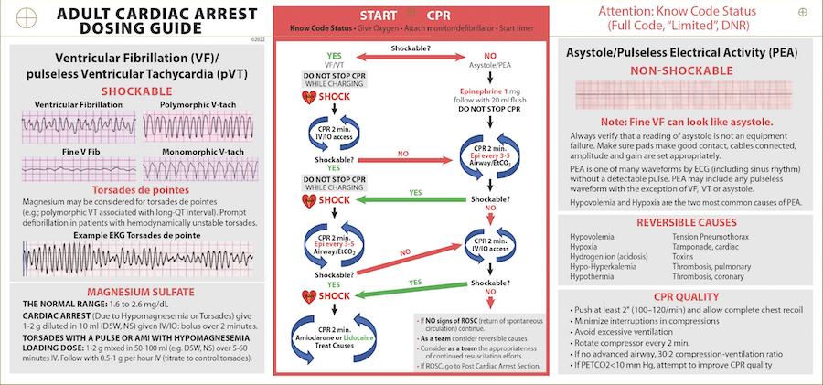

Resources
Quick reference materials for Code Blue and Rapid Response leadership.
Key Points
- Establish the leader early. Try: “I’m Joe/Jane Doe, the resident on the code team. Who is running this code/RRT?” or “Can I take over?”
- Ask for the nursing/outreach 30-second story. Try: “What changed, what have you already tried, and what are you most worried about?”
- Stay at the foot of the bed when leading. Do not drift into tasks that pull you out of room management.
- Keep the big picture visible. For an RRT, ask whether this is becoming a code or whether the patient needs ICU. For a code, protect high-quality compressions and shock early if shockable.
- Close the loop before leaving. Name disposition, orders, ownership, and debrief plan.
Nurse-Team Huddle Script
“Let’s huddle for 30 seconds. I’m running the rapid unless someone else is. Bedside nurse, what changed? Outreach, what are you worried about? My working problem is [problem]. Our immediate plan is [plan]. If [trigger] happens, call a code.”
Use this when nursing or outreach is already actively managing the patient. The goal is not to slow the response; it is to prevent parallel, conflicting plans.
ACLS Card

Site Differences
2026 verification status: TBD. Confirm site-specific teams and phone/paging workflows before the live session.
Confirm whether each site has a formal nurse-led outreach function, who activates it, and how it interfaces with the resident rapid response/code team.
| U of U | IMED | VA | |
|---|---|---|---|
| RRT/MET | House Sup, IM Res, SICU RN, Pharm | IM, CICU RN, Nurse Sup, Pharm, RT, EKG, ABG, Lab | IM, MICU, CNO, RNs, RT, Pharmacy (7a-7p) |
| Code Blue | add: Anesthesia, EMT, MICU resident, Pharm, ICU Fellow | add: ICU attendings | add: Anesthesia/ED |
| Numbers | Shock Team, Cath, Brain Attack, VAD: 1-2222 | Shock Team: Vocera TICU attending; Brain Attack: Operator/x33333 | Brain Attack: Page Neuro Senior; Cath: Page Cardiology; Code: x6666 |